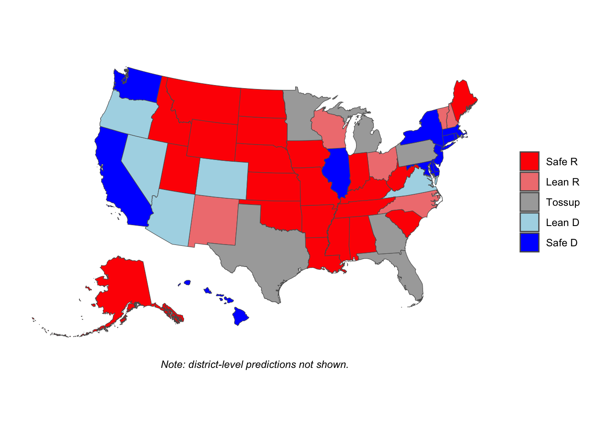

| State | Urban-Partisan Lean | Predicted Outcome | State | Urban-Partisan Lean | Predicted Outcome |
|---|---|---|---|---|---|
| Alaska | R+45.7 | R+44.5 | Nebraska | R+12.85 | R+11.65 |
| Alabama | R+22.43 | R+21.23 | New Hampshire | R+17.76 | R+16.56 |
| Arkansas | R+29.04 | R+27.84 | New Jersey | D+25.14 | D+26.34 |
| Arizona | D+8.63 | D+9.83 | New Mexico | R+17.51 | R+16.31 |
| California | D+23.95 | D+25.15 | Nevada | D+17.38 | D+18.58 |
| Colorado | D+5.78 | D+6.98 | New York | D+32.25 | D+33.45 |
| Connecticut | D+7.7 | D+8.9 | Ohio | R+1.34 | R+0.14 |
| Delaware | D+0.56 | D+1.76 | Oklahoma | R+16.82 | R+15.62 |
| Florida | D+10.71 | D+11.91 | Oregon | R+3.01 | R+1.81 |
| Georgia | R+4.3 | R+3.1 | Pennsylvania | D+3.91 | D+5.11 |
| Hawaii | D+3.42 | D+4.62 | Rhode Island | D+14.84 | D+16.04 |
| Iowa | R+24.72 | R+23.52 | South Carolina | R+13.55 | R+12.35 |
| Idaho | R+20.3 | R+19.1 | South Dakota | R+40.99 | R+39.79 |
| Illinois | D+13.13 | D+14.33 | Tennessee | R+13.14 | R+11.94 |
| Indiana | R+9.83 | R+8.63 | Texas | D+5.88 | D+7.08 |
| Kansas | R+15.99 | R+14.79 | Utah | D+3.5 | D+4.7 |
| Kentucky | R+19.43 | R+18.23 | Virginia | D+0.62 | D+1.82 |
| Louisiana | R+12.99 | R+11.79 | Vermont | R+39.32 | R+38.12 |
| Massachusetts | D+16.77 | D+17.97 | Washington | D+4.75 | D+5.95 |
| Maryland | D+14.54 | D+15.74 | Wisconsin | R+14.3 | R+13.1 |
| Maine | R+35.91 | R+34.71 | West Virginia | R+33.71 | R+32.51 |
| Michigan | R+2.6 | R+1.4 | Wyoming | R+49.85 | R+48.65 |
| Minnesota | R+7.7 | R+6.5 | NE 01 | R+0.93 | D+0.27 |
| Missouri | R+12.23 | R+11.03 | NE 02 | D+18.66 | D+19.86 |
| Mississippi | R+35.04 | R+33.84 | NE 03 | R+55.07 | R+53.87 |
| Montana | R+44.73 | R+43.53 | ME 01 | R+22.52 | R+21.32 |
| North Carolina | R+9.78 | R+8.58 | ME 02 | R+49.29 | R+48.09 |
| North Dakota | R+35.14 | R+33.94 | District of Columbia | D+48.43 | D+49.63 |
2024 Election Model
Politics
Introduction
For my Stat 155 final project last semester, I examined the connection between urbanization and presidential elections. The results were intriguing; there was both a strong correlation between the variables, and a nearly linear trend of increase in the past fifty years. With the 2024 election just around the corner, I thought it might be interesting to revisit these findings, and see what the implications could be for this pivotal race. To do so, I built a simple model meant to predict the outcome of the election, assuming a very strong correlation between urbanization and voting patterns.
Methodology
First, I retrieved urbanization numbers updated with 2020 census data from 538. Next, I computed the urbanization index for the US as a whole, to have a baseline to compare the states to. From these numbers, I obtained an “urban lean” for each state, showing how much more urban or rural it is than the country as a whole. This metric corresponds to the “partisan lean” calculated by 538, Cook, and others, which tells how much redder or bluer a state is from the baseline. So once I rescaled according to 2020 results, I had an “urban-partisan lean” for each Electoral College “state” (negative numbers indicate Republican advantage).
However, a partisan lean alone isn’t enough to tell you what will happen; it only predicts results in a neutral national environment. Thankfully, there are ample polls at both the national and state levels available for public consumption. The national average on 270towin was Harris +2.6% on the day of writing this (NOTE: her lead would shrink to 1.2% by election day, this is the number now reflected in the data). Now the model is giving real predictions. By and large they are reasonable, but there are some eye-raising outliers (Utah D+5? Vermont R+38???). In its current state, the model is just a representation of the national mood, and a fairly crude one at that. So I decided to take things a step further, and average the urban-partisan predictions with current state polling, which can hopefully account more for local trends. In turn, however, the polls are flawed in that they sometimes make incorrect assumptions about the overall environment. The urban-partisan lean can then be seen as adjusting the polls on the assumption that urbanization is the main plotline of the 2024 election (which could very well turn out not to be the case).
| State | Predicted Outcome | State | Predicted Outcome |
|---|---|---|---|
| District of Columbia | D+68.16 | New Mexico | R+5.15 |
| California | D+24.98 | New Hampshire | R+5.78 |
| New York | D+23.47 | Wisconsin | R+6 |
| Massachusetts | D+22.83 | NE 01 | R+7.41 |
| Maryland | D+21.47 | Missouri | R+11.27 |
| New Jersey | D+21.07 | South Carolina | R+12.03 |
| Hawaii | D+17.01 | Indiana | R+12.57 |
| Rhode Island | D+16.27 | Maine | R+13.05 |
| Illinois | D+15.62 | Utah | R+13.65 |
| NE 02 | D+14.13 | Iowa | R+14.11 |
| Washington | D+13.47 | Nebraska | R+14.32 |
| Connecticut | D+12.45 | Kansas | R+14.7 |
| Delaware | D+10.13 | Louisiana | R+15.2 |
| Nevada | D+8.99 | Oklahoma | R+15.81 |
| Colorado | D+8.49 | Tennessee | R+17.62 |
| Oregon | D+5.09 | Arkansas | R+21.42 |
| Arizona | D+4.06 | Kentucky | R+22.12 |
| Virginia | D+3.81 | Alabama | R+23.31 |
| Florida | D+2.86 | ME 02 | R+24.54 |
| ME 01 | D+2.84 | Idaho | R+24.9 |
| Pennsylvania | D+2.56 | Mississippi | R+25.17 |
| Michigan | D+0.2 | Alaska | R+26.25 |
| Minnesota | R+0.15 | West Virginia | R+29.75 |
| Texas | R+0.16 | North Dakota | R+30.47 |
| Georgia | R+2.15 | Montana | R+30.77 |
| Vermont | R+3.06 | South Dakota | R+32.79 |
| Ohio | R+3.92 | Wyoming | R+45.98 |
| North Carolina | R+4.94 | NE 03 | R+53.53 |
Analysis
Incorporating 270towin’s averages where available (and using 2020 results in the noncompetitive states where they aren’t), the model spits out predictions more in the realm of plausibility, but still has plenty of hot takes. For Democrats, there’s a lot to like. The model predicts Harris retaining the crucial states of Arizona, Nevada and Pennsylvania, and snatching Florida back, coming tantalizingly close in vote-rich Texas and Ohio as well. There are silver linings for Republicans as well. The “Blue Wall” cracks, with Wisconsin turning red and Michigan and Minnesota essentially tied. Trump also flips Georgia, Maine, New Hampshire, New Mexico and Vermont, while keeping remarkably close in Oregon. While the Vermont number is pure fantasy, and a reminder that these “predictions” are meant to be held with a certain degree of skepticism, Oregon is a spicy pick which I like quite a bit. Though it’s often lumped in with its more urban neighbors, Washington and California, as a West Coast liberal haven, in reality Oregon is much more rural, and its major metropolis, Portland, has suffered the past four years from ultra-liberal policies implemented in the wake of 2020. As a result, although Biden won it by 16 points in 2020, two years ago the Democrat only won the governer’s race by 3.5%, which is pretty in-line with what the model predicts. However, overall the unavoidable problem for Republicans is that these states are all pocket change compared to the electoral behemoths of Florida, Texas and Ohio, worth a combined 89 votes, and which are critical parts of any winning Republican coalition. And sure enough, when we plug in electoral votes, the model predicts a Kamala Harris victory.
# A tibble: 2 × 2
Candidate Votes
<chr> <dbl>
1 Harris 283
2 Trump 255However, the number of close state contests means this could easily turn into a blowout one way or the other. The polls underestimated Trump by a little over 4% in 2020: a similar shift would flip Michigan, Pennsylvania, Florida, Virginia, Arizona and Maine’s 1st district for good measure, giving him a decisive 344-194 edge. Conversely, a similar-sized shift toward Harris would bring Minnesota, Texas, Georgia, Vermont and Ohio into her column for a whopping 369-169 rout, which would be the biggest this century.

Conclusion
How seriously should these predictions be taken? Mostly, this was just an exercise to satisfy my curiosity, and I wouldn’t put too much weight in the exact numbers. However, there are some reasons to think that it might be more accurate than it seems. For one, there’s my previous project, which showed that urbanization is a strong predictor of election results. It also has an advantage over other commonly-used predictors, such as race, gender or education, in that where you live is something you can change. But no one explanatory variable can possibly capture the collective consciousness of 330 million Americans. At the end of the day, the only way to know for sure who will win is to wait for all the votes to be cast and counted.
UPDATE - Postmortem
Well, these predictions did not hold up too well. The model correctly called 46 of 56 states and districts, but considering there were only about 10 “swing states” to begin with, any reasonably informed observer could’ve done better. And indeed, the much more intricate models at Silver Bulletin, 538, etc. were far more accurate.
However, I can claim some prescience about why my model failed. These predictions were predicated on the continuance of the remarkably strong trend of increased urban-rural political polarization which I observed in “The Urban-Rural Divide in American Politics.” A simple linear regression predicted that the correlation coefficient between urbanization and Democratic vote share would jump to around 0.8 in 2024. Instead, the opposite happened.
cor(newresults_clean$urbanindex, newresults_clean$pct_dem_2024)[1] 0.6067998The major story of the 2024 election was minority groups, especially Hispanics, swinging sharply rightward, and as minorities tend to live in urban areas, decreased racial polarization led to decreased urban-rural polarization. So my future as a political prognosticator may be limited. However, this was still a valuable coding challenge, and it’s given me firsthand experience with an important lesson: past performance is not a guarantee of future results.
Sources
Geographic data
Polls (accessed on October 15)
Electoral votes
Urbanization
Urbanization (for DC)
Population data
2024 vote